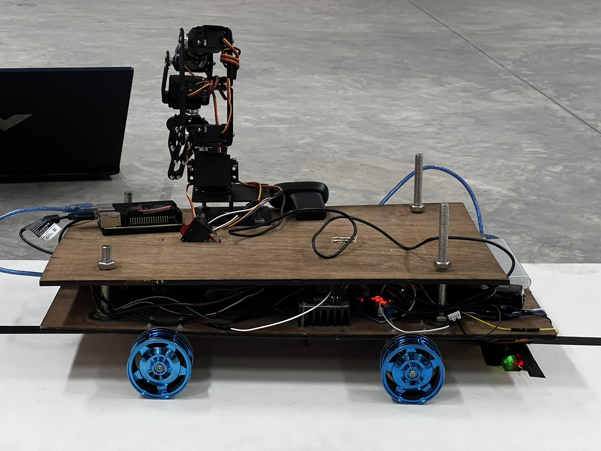
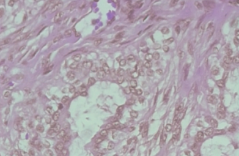
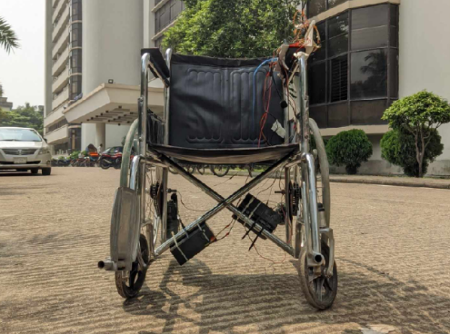
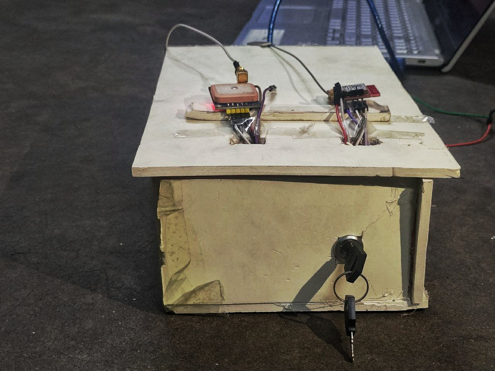

Projects
-

Autonomous Inventory Robot
In this project, we developed an Inventory Bot which can take real-time voice commands and bring the object mentioned in the voice command using real-time object detection by YOLOv, then grabbing the object with necessary ARM movement and bringing it back to the base with LFR.
-

Deep-Learning-based Breast Cancer Classification Using VGGIN
In this project, I trained the VGGIN model on the BreakHis histopathology dataset and achieved 99.628% accuracy on the test dataset. VGGIN is a deep learning model combining VGG-19 and the Inception module.
-

Voice Controlled Wheelchair for Disabled Patients
We developed a method to control a wheelchair with only the patient's voice commands. Our wheelchair takes voice commands from the patients in any language and in any accent and moves accordingly. [Video]
-
Machine Learning Based Electrical Fault Classification with GAF Image
ML algorithms like Decision Tree Classifier, Random Forest, and CNN-based deep learning methods were used to classify the electrical fault from the BUS voltage and current data.
-

Car Theft Detection and Prevention with Automatic GPS Tracking
This is an IoT-based project. GSM and GPS technology were used to track and send the car location, and the ESP32-CAM module was used to capture the photo of the thief and shut the car down. [Video Presentation]
-
Extracting Audio from Muted Video
The main objective of this project was to extract the audio signal from a muted video using signal processing methods in MATLAB. This was originally a project by Abe Davis, MIT [Visual Microphone].